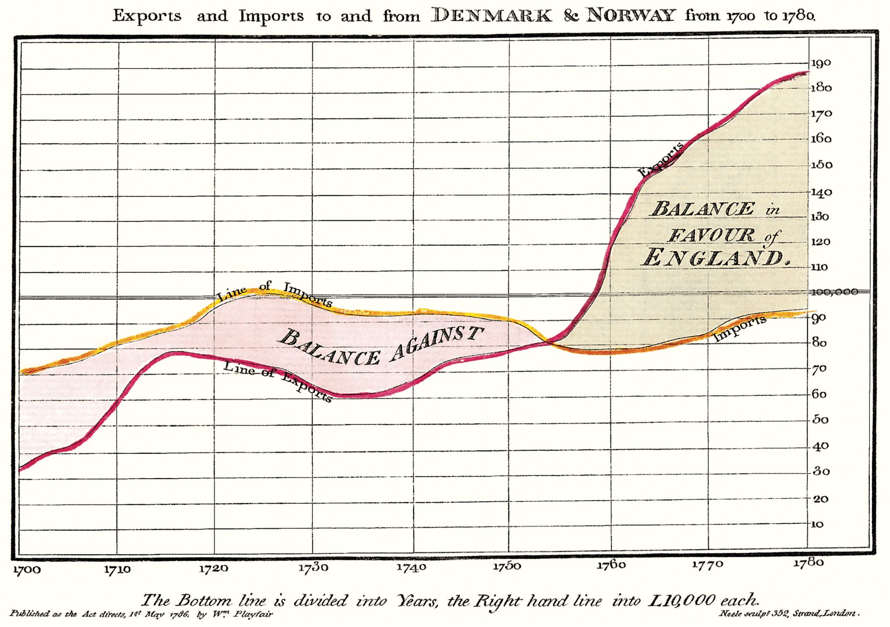

Information Literacy in Higher Education Landscape Study
Khanh Nghiem
This page provides documentation and personal reflection for my summer work as a researcher at the Center for an Informed Public (CIP) at the University of Washington, in service of the Institute for Citizens and Scholars (C&S).
My supervisor is Chris Coward and my collaborator is Sarah Tran.
Scope of Work
The research team at CIP is tasked conducting gray and white literature review to produce a landscape report that will be read by universities and colleges affiliated with C&SSpecifically, the report will be shared with college Presidents who are active members in the Campuswide Immersion program at C&S.. The goal is to provide evidence-based insider insights and practical examples of information literacy (IL) programs that can strengthen student capacity to understand the evolving information landscape, engage thoughtfully with information, and participate more effectively with our democratic society. The project duration is between June 22 and September 15, 2026.
Artifacts
These artifacts are only accessible to authorized personels at University of Washington:
Weekly Reflection
Week 1
When I first started reviewing the literature around IL in higher ed, I quickly realized that many sources and program implementations point to documents published by the Association of College & Research Libraries (ACRL), a member organization of the American Library Association (ALA).
End, later sections are placeholders
Sample text
In his later booksBeautiful Evidence, Tufte starts each section with a bit of vertical space, a non-indented paragraph, and the first few words of the sentence set in small caps. For this we use a span with the class newthought, as demonstrated at the beginning of this paragraph. Vertical spacing is accomplished separately through <section> tags. Be consistent: though we do so in this paragraph for the purpose of demonstration, do not alternate use of header elements and the newthought technique. Pick one approach and stick to it.
Text
Although paper handouts obviously have a pure white background, the web is better served by the use of slightly off-white and off-black colors. Tufte CSS uses #fffff8 and #111111 because they are nearly indistinguishable from their ‘pure’ cousins, but dial down the harsh contrast. We stick to the greyscale for text, reserving color for specific, careful use in figures and images.
In print, Tufte has used the proprietary Monotype BemboSee Tufte’s comment in the Tufte book fonts thread. font. A similar effect is achieved in digital formats with the now open-source ETBook, which Tufte CSS supplies with a @font-face reference to a .ttf file. In case ETBook somehow doesn’t work, Tufte CSS shifts gracefully to other serif fonts like Palatino and Georgia.
Also notice how Tufte CSS includes separate font files for bold (strong) and italic (emphasis), instead of relying on the browser to mechanically transform the text. This is typographic best practice.
If you prefer sans-serifs, use the sans class. It relies on Gill Sans, Tufte’s sans-serif font of choice.
As always, these design choices are merely one approach that Tufte CSS provides by default. Other approaches can also be made to work. The goal is to make sentences readable without interference from links, as well as to make links immediately identifiable even by casual web users.
Figures
Tufte emphasizes tight integration of graphics with text. Data, graphs, and figures are kept with the text that discusses them. In print, this means they are not relegated to a separate page. On the web, that means readability of graphics and their accompanying text without extra clicks, tab-switching, or scrolling.
Figures should try to use the figure element, which by default are constrained to the main column. Don’t wrap figures in a paragraph tag. Any label or margin note goes in a regular margin note inside the figure. For example, most of the time one should introduce a figure directly into the main flow of discussion, like so:

 F.J. Cole, “The History of Albrecht Dürer’s Rhinoceros in Zooological Literature,” Science, Medicine, and History: Essays on the Evolution of Scientific Thought and Medical Practice (London, 1953), ed. E. Ashworth Underwood, 337-356. From page 71 of Edward Tufte’s Visual Explanations. But tight integration of graphics with text is central to Tufte’s work even when those graphics are ancillary to the main body of a text. In many of those cases, a margin figure may be most appropriate. To place figures in the margin, just wrap an image (or whatever) in a margin note inside a
F.J. Cole, “The History of Albrecht Dürer’s Rhinoceros in Zooological Literature,” Science, Medicine, and History: Essays on the Evolution of Scientific Thought and Medical Practice (London, 1953), ed. E. Ashworth Underwood, 337-356. From page 71 of Edward Tufte’s Visual Explanations. But tight integration of graphics with text is central to Tufte’s work even when those graphics are ancillary to the main body of a text. In many of those cases, a margin figure may be most appropriate. To place figures in the margin, just wrap an image (or whatever) in a margin note inside a p tag, as seen to the right of this paragraph.
If you need a full-width figure, give it the fullwidth class. Make sure that’s inside an article, and it will take up (almost) the full width of the screen. This approach is demonstrated below using Edward Tufte’s English translation of the Napoleon’s March data visualization. From Beautiful Evidence, page 122-124.
You can use this class on a div instead of a figure, with slightly different results but the same general effect. Experiment and choose depending on your application.
ImageQuilts
Tufte CSS provides support for Edward Tufte and Adam Schwartz’s ImageQuilts. See the ET forum announcement thread for more on quilts. Some have ragged edges, others straight. Include these images just as you would any other figure.
This is an ImageQuilt surveying Chinese calligraphy, placed in a full-width figure to accomodate its girth:

Here is an ImageQuilt of 47 animal sounds over and over, in a figure constrained to the main text region. This quilt has ragged edges, but the image itself is of course still rectangular.

Epilogue
Many thanks go to Edward Tufte for leading the way with his work. It is only through his kind and careful editing that this project accomplishes what it does. All errors of implementation are of course mine.